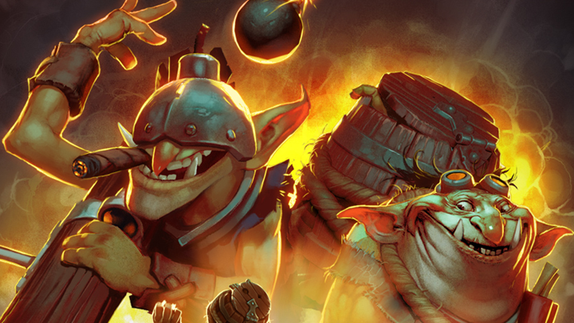
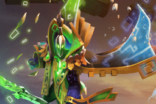
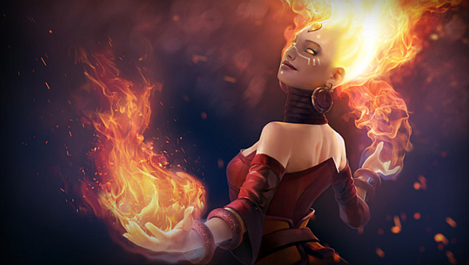
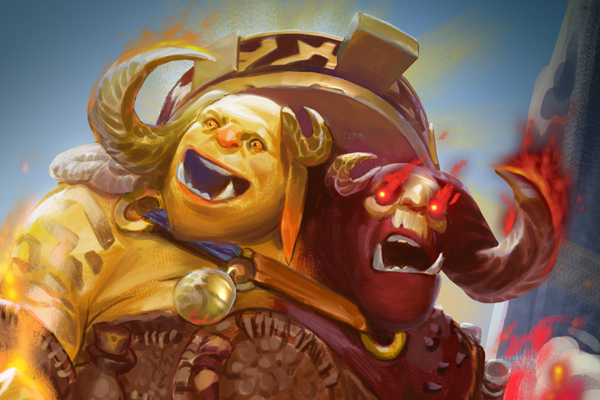

HEROE DE INTELIGENCIA
TECHIES
En la amplia historia de la Ensenada del Dragador, no hay ningún otro negocio más maldito que Demoliciones Techies. Pensándolo bien, la Ensenada del Dragador ya no existe. Ni Toterin. Ni tan siquiera Villa Tramposa. De hecho, si alguien investigara la historia de Demoliciones Techies notarían que poco después de la aparición de los Techies, las ciudades suelen desaparecer. Como todas las inevitables catástrofes que rodean a Techies, la erradicación de la Ensenada del Dragador comenzó con un invento. Con la tarea de diseñar una manera más segura de detonar explosivos en las minas bajo la ciudad, los prodigiosos Squee, Spleen y Spoon desarrollaron la creación más extraña hasta la fecha: un botón que, al ser pulsado, activaba un dispositivo lejano que encendía un detonador.
VER VIDEO

HEROE DE INTELIGENCIA
RUBICK
Cualquier mago puede lanzar un hechizo o dos, y algunos puede que incluso estudien lo suficiente como para convertirse en brujos, pero solo a los más talentosos se les permite ser reconocidos como Magus. Sin embargo, como en cualquier círculo de hechiceros, el sentido de comunidad nunca garantiza que la competencia sea cortés. Aun siendo ya un duelista de renombre y un erudito del grandioso mundo de la hechicería, a Rubick nunca se le había pasado por la cabeza que quizá tuviera madera para ser un Magus hasta encontrarse en mitad de su séptimo intento de asesinato. Mientras lanzaba sin demasiada dificultad al duodécimo de una sarta de supuestos asesinos desde un alto balcón, cayó en la cuenta de cuán poco imaginativos se habían vuelto los atentados.
VER VIDEO

HEROE DE INTELIGENCIA
LINA
La rivalidad fraterna entre Lina la Asesina y su hermana pequeña Rylai, la Doncella de Cristal (Crystal Maiden), hizo correr ríos de tinta en la templada región donde pasaron su infancia en una lucha continua. Lina siempre tuvo ventaja. Sin embargo, aunque Crystal era cándida e ingenua, el feroz ardor de Lina se veía atenuado por el ingenio y la manipulación. Los exasperados padres de estos incompatibles retoños llegaron a utilizar media docena de moradas, perdiendo unas por fuego y otras por hielo, antes de comprender que la vida sería mucho más sencilla si las niñas vivieran separadas. Como hermana mayor, Lina fue enviada lejos hacia el Sur para vivir con una paciente tía suya en el abrasador Desierto de Misrule, un clima en el que la feroz Asesina se encontraba como pez en el agua.
VER VIDEO

HEROE DE INTELIGENCIA
OGRO
El ogro común es la criatura a partir de la cual se creó la expresión "Más tonto que las piedras". En su estado natural, un ogro es sumamente incapaz de hacer o decidir nada. Sin más vestimenta que la suciedad en sus cuerpos, a veces se encuentra envuelto en pieles de animales tras devorar sus despojos. Al ser una criatura poco sociable, se le suele encontrar confraternizando cariñosamente con rocas o tocones que haya confundido por los de su especie (lo que puede explicar la baja tasa de reproducción del ogro). Sin embargo, más o menos una vez por generación, la raza de los ogros es bendecida con el nacimiento de un Mago Ogro (Ogre Magi) bicéfalo, al que inmediatamente se le otorga el nombre tradicional de Aggron Quiebrapiedras, el nombre del primer y tal vez único ogro inteligente.
VER VIDEO